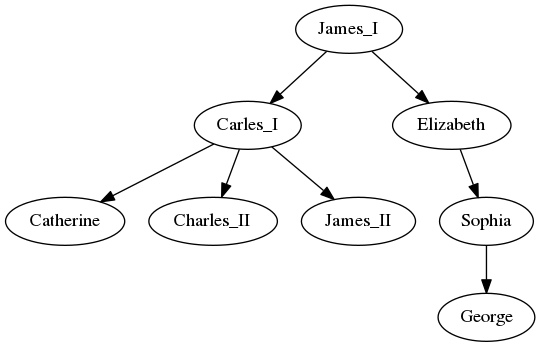
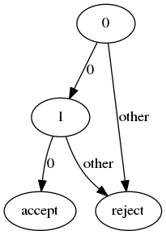

COMS342 Recitation 1
Table of Contents
- 1. Program Paradigm
- 2. Language
- 2.1. Concepts
- 2.2. Chomsky Hierarchy
- 2.3. Chomsky Hierarchy Grammar Rule
- 2.4. regular language - Informal Definition
- 2.5. regular language - Example
- 2.6. Regular Language: Formal Definition
- 2.7. Pumping lemma for regular languages
- 2.8. Example
- 2.9. context-free/sensitive language
- 2.10. Pumping Lemma for context-free language
- 2.11. Example
- 2.12. Question
1 Program Paradigm
1.1 Program Paradigm Overview
A programming paradigm is a style or “way” of programming. 1 , 2
| Program Paradigm | Description | Examples |
|---|---|---|
| Imperative | First do this then do that | Fortran, C |
| Declarative | Describes what to do | yacc, SQL, makefile |
| Functional | Side-Effect Free | Lisp, Scheme |
| Object-Oriented | simulate real-world objects | C++, Java, Ruby |
| Event-Driven | OnDoingSometing() | Android |
| Logic | Rules and queries | Prolog |
1.2 imperative
Control flow is explicit. E.g. the following C code:
int main() { int i=0,sum=0; while (i<10) { if (i % 2 == 0) { sum = sum + i; } else { sum = sum + 2 * i; } } }
1.3 Declarative
- Describes what to do, and NOT how to do it.
- Control flow is implicit.
This is a SQL query:
select upper(name) from people where length(name) > 5 order by name
1.4 object orient
Send messages between objects, simulate real world interaction.
E.g. C++ code:
class Rect { public: void SetHeight(int height) {m_height = height;} void SetWidth(int width) {m_width = width;} int GetArea() {return m_height * m_width;} private: int m_height = 0; int m_width = 0; }; int main() { Rect rect; rect.SetHeight(5); rect.SetWidth(6); rect.GetArea(); // => 30 }
1.5 (pure) functional
- Side-Effect free:
res=foo(a,b) - Same input produces same output
- Function as First-class citizen: e.g. parameter of function
compute([1,2,3], sum)compute([1,2,3], max)compute([1,2,3], min)
- Overtone (demo): http://overtone.github.io/
1.6 event-driven
Android:
public class MainActivity extends Activity { public void onCreate(Bundle savedInstanceState) { super.onCreate(savedInstanceState); } protected void onStart() { super.onStart(); } protected void onResume() { super.onResume(); } protected void onPause() { super.onPause(); } protected void onStop() { super.onStop(); } public void onDestroy() { super.onDestroy(); } }
1.7 logic
- Components
- Rules: list the facts
- Query
- Example: family tree
digraph {
James_I->Carles_I
James_I-> Elizabeth
Elizabeth -> Sophia
Sophia -> George
Carles_I -> Catherine
Carles_I -> Charles_II
Carles_I -> James_II
}

1.8 logic (prolog)
Rules: parent(child, parent)
parent(charles1, james1). parent(elizabeth, james1). parent(charles2, charles1). parent(catherine, charles1). parent(james2, charles1). parent(sophia, elizabeth). parent(george1, sophia).
Queries:
parent(charles1, george1) % => False parent(charles1,X) % => James1 parent(X,charles1) % => catherine, chales2, james2
1.9 Reverse A List
- C
void reverse(struct node **head) { struct node *prev = NULL; struct node *current = *head; struct node *next; while (current) { next = current->next; current->next = prev; prev = current; current = next; } *head = prev; }
1.10 Reverse A List
- scheme
(define (rev lst) (if (null? lst) lst (append (rev (cdr lst)) (list (car lst)))))
- prolog
rev([],[]) rev(H|T,L) :- rev(T,T1), append(T1,[H],L)
2 Language
2.1 Concepts
- set operation:
- a set: \(\{a,b\}\), \(\{a|a \inB\}\)
- subset: \(A \subset B\), \(A \subseteq B\)
- interaction: \(A \cup B\), \(A \cap B\), \(A \setminus B\)
- alphabet are the set of atomic symbols
{0,1,2,3,4,5,6,7,8,9}- a,b,c,..
- A word is a string of alphabets
1, 2, 12, 543, 1000, 002- α, β, …
- All possible words form a set of words
- {X,XX,XXX,…} for all X={0-9}
- A language is a subset of all the possible words
- {1,3,5,7}
- {1,3,5,7,…}
- {1,11,111,…}
2.2 Chomsky Hierarchy
- regular language
- {42}
- {prime number in range less than 100}
- {string starting with double zeros}
- context-free language
- \(L = \{a^nb^n : n \ge 0\}\)
- context-sensitive language
- \(L = \{ a^nb^nc^n : n \ge 0 \}\)
2.3 Chomsky Hierarchy Grammar Rule
Preliminary:
- non-terminals: A,B,C
- terminals: a,b,c
- strings: a string of non-terminals and terminals: α, β, γ
- production rule: \(LHS \rightarrow RHS\)
Languages:
- regular language: \(A \rightarrow a\) or \(A \rightarrow aB\)
- context free: \(A \rightarrow \gamma\)
- context sensitive: \(\alpha A\beta \rightarrow \alpha\gamma\beta\)
- context free: \(\alpha \rightarrow \beta\) (no restrictions)
2.4 regular language - Informal Definition
Kleene's theorem: regular expressions is equivalent to finite automata
We call a language regular if:
- it can be decided if a word is in the language with a machine,
- with constant (finite) memory,
- by examining all symbols in the word one after another.
Alternatively:
- a regular language is recognized by a finite automation.
2.5 regular language - Example
Example:
{42}:- Approach: check first, check second
{00XX}where X is 0-9- Approach: check whether the first two are 0

2.6 Regular Language: Formal Definition
The collection of regular languages over an alphabet \(\Sigma\) is defined recursively as follows:
- The empty language \(\emptyset\), and the empty string language {\(\Sigma\)} are regular languages.
- For each \(a \in \Sigma\) (a belongs to \(\Sigma\)), the singleton language {a} is a regular language.
- If A and B are regular languages, then \(A \cup B\) (union), \(AB\) (concatenation), and A* (Kleene star) are regular languages.
- No other languages over \(\Sigma\) are regular.
2.7 Pumping lemma for regular languages
Let L be a regular language. Then there exists an integer \(p \ge 1\) depending only on L such that every string w in L of length at least p (p is called the "pumping length") can be written as w = xyz (i.e., w can be divided into three substrings), satisfying the following conditions:
- \(|y| \ge 1\)
- \(|xy| \le p\)
- for all \(i \ge 0\), \(xy^iz \in L\)
Convert is not true: a language that satisfies these conditions may still be non-regular.
2.8 Example
the language \(L = \{a^nb^n : n \ge 0\}\) over the alphabet \(\Sigma = {a, b}\) is non-regular.
- For L there exists an integer p satisfying above lemma.
- For the word \(w = a^pb^p\), it can be wrtten as \(w = xyz\).
- Since \(|xy| \le p\), y only consists of \(a\).
- If we "pump" \(y\), i.e. \(xy^iz\), we keep adding "a" to the string, resulting in the number of \(a\) is larger than the number of \(b\), which is not in the language.
2.9 context-free/sensitive language
2.10 Pumping Lemma for context-free language
If a language L is context-free, then there exists some integer \(p \ge 1\) (called a "pumping length") such that every string s in L that has a length of p or more symbols (i.e. with \(|s| \ge p\)) can be written as
- s = uvwxy
with substrings u, v, w, x and y, such that
- \(|vwx| \le p\)
- \(|vx| \ge 1\), and
- \(uv^nwx^ny\) is in L for all \(n \ge 0\).
2.11 Example
show language \(L = \{ a^nb^nc^n | n > 0 \}\) is not context-free language.
- For L there exists an integer p satisfying above lemma.
- For the word \(w = a^pb^pc^p\), it can be wrtten as \(w = uvwxy\).
- Since \(|vwx| \le p\), it can only consists of up to two distinct alphabets in \(a,b,c\).
- If we "pump" \(v\) and \(x\), i.e. \(uv^iwx^iy\), we keep adding two of them to the string, resulting in the lack of the third.
2.12 Question
Questions?